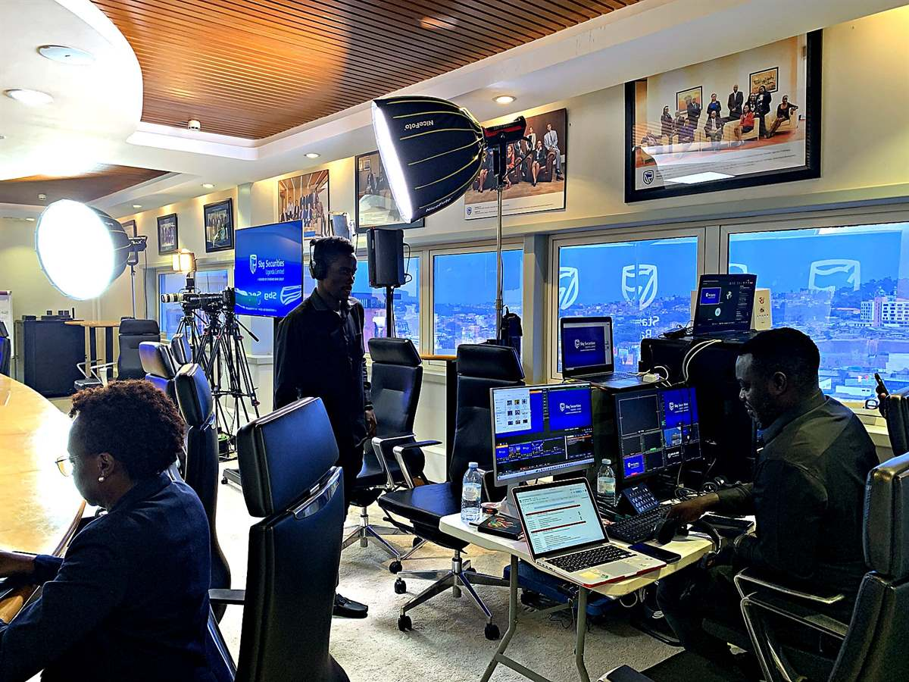

Plan for the room
We look at the venue, the audience and the running order first. Then we choose the equipment and crew.
About Sembule Media
Based in Bunamwaya, Kampala, Sembule Media works with events, organizations and communities across Uganda.
Since 2022
Sembule Media started in 2022 to bring live video, streaming, sound and PA, photography, videography and documentary work under one roof. You deal with one crew, not five suppliers who have never met.
Every job starts with the same three questions: what is the room, who is the audience, and what should be remembered? The equipment follows from the answers, not the other way round.
Explore services
We look at the venue, the audience and the running order first. Then we choose the equipment and crew.
We talk to your event team before the day, so nothing gets decided for the first time on the morning.
Formats, timing and scope are agreed up front, so the hand-over holds no surprises.
Where we work
A city hotel or a village hall: tell us where it is and what you need. We’ll confirm availability and logistics before you commit to anything.
A livestream, a sound system and a documentary look like different jobs. They succeed or fail for the same reasons: preparation, coordination and delivering what was promised.